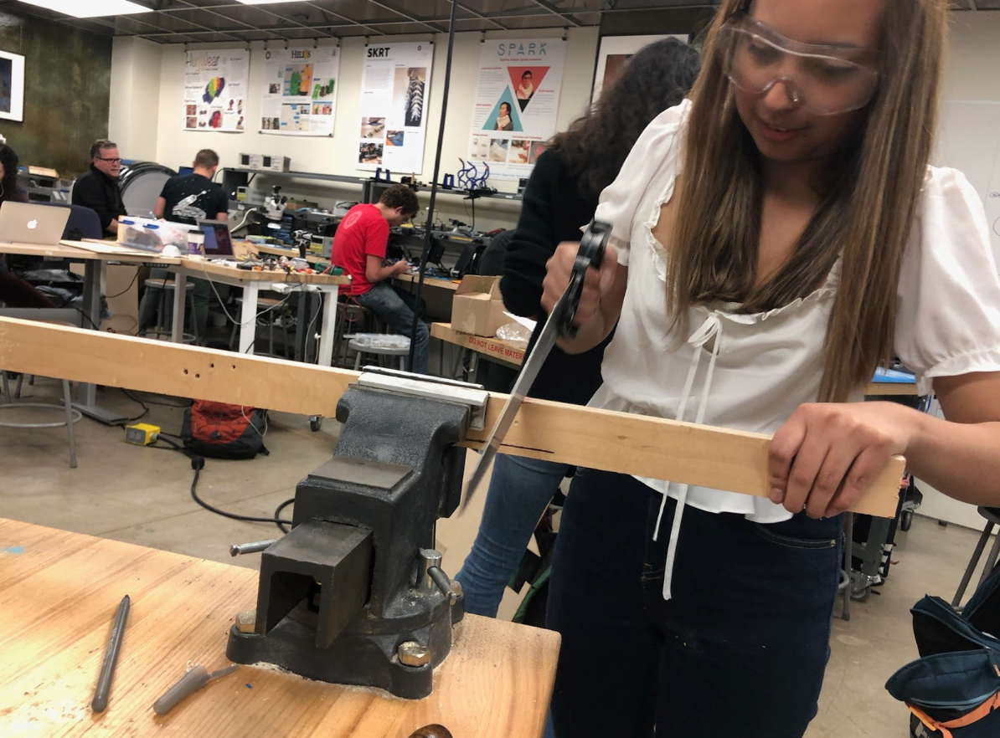

The Destroy the World in a Day Simulator is an interactive arcade game built to educate consumers about their own decisions. Players go through their daily life making decisions about what to eat, how to dress, etc. and see how their decisions impact the health of the earth if every consumer behaved as they did. At the end of the game, no matter what decisions were made, the Earth will be destroyed due to environmental degradation. The reason players cannot win this game is because the world of the game mirrors that of the outside world: there is no single consumer habit that can stop us from the path of environment unsustainability. Solving our environmental problems will require greater regulation and control on businesses who produce items with costs borne by the global economy, instead of the entity profiting from the sale of the product. We aimed to create an intuitive device .

In an interdiscplnary team of four,I conceptualized the idea and worked on the entire design process to create a fully functional final protype. My main responibilities invloved mechanical and visual design of the product. I worked on desiging, modeling, and constructing the physical enclosure as well as the physical interactions and design of the physical product. I also ensured maximum robustness and building the internal support and housing for the 20 computer monitor and electronics.I also assisted in research on envriomental topics working closely with a freind and founding member of Latinos in the Enviroment at Berkeley.
Our group was curious about: who does the burden of sustainability fall on? We were keen on exploring systems, corporates, and policy instead of solely focusing on individual consumers. I mentioned a YouTube video: let’s go shopping & destroy the planet, by an ethical fashion activist, Kristen Leo. In the video she played a video game called planet pollution; I proposed to make it a physical video game as an arcade game that seeks to educate and expose in a seemingly fun interactive game that will persuade potential users to particpate. Together in the group we decided to conflate our interest in industries and exposes the practices of various industries.Together we brainstormed what industries to focus on and what the general game flow we wanted.
The reserach was a critical portion of our project. It was important for me to expand general cautious cosumption into action on participants. It was essential to vocalize issues not addressed in the mainstream particularly to enviromental reprecussions on people of color The game every option will lead to destruction and it amplifies the irony of how some product like fruits and vegtables are politized with the destruction of communities in central and south america. How many times you play the game will end in the destruction of the planet. This asks the user to critically think about every choice and the poltics behind the industries under capitalism.
The design of the enclosure was centered around 80’s arcade cabinets. The design followed a similar aesthetic and shape as traditional arcade cabinets. The images above showcase the original sketch and a rendering of the CAD model. The major design constraints revolved around designing on the computer monitor screen while simultaneously staying within in the dimensions of the black acrylic we purchased. The design was proportioned to fit the screen but also have it high up so that users are looking straight at the screen rather than having it lower in view. The button interface is tilted to be inclined in order to maximize space. The next major design constraint was the weight of the computer screen. The cabinet would have to securely be able to withhold the weight of the box. The approach to this constraint was to make a stable wood table inside of the acrylic enclosure to hold the computer screen. Another notable feature in the design if the front cover for the buttons and led ring. The design has this piece is inclined for users to have easier access to play. This piece can be popped on and off, made with finger joints around the edges so there is access to the electronics for debugging.

With these design considerations in mind, the digital prototype was created on Fusion 360. These pieces were cut on acrylic and wood. The acrylic was used to give a cleaner look and to resemble actual games. The final touches included decorating the exterior with vinyl cut stickers and laser cutting the title for a 3D effect. This design was Tetris inspired to reinforce the 80’s game aesthetic and create an inviting and enjoyable product for playing.